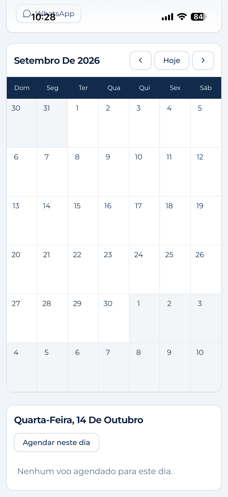

Agendamento de voos conectado à rotina operacional.
O solicitante pode agendar, alterar e excluir voos diretamente pelo sistema. Assim que um voo é agendado, o sistema envia um e-mail automaticamente.
Do voo criado à equipe informada.
O módulo foi estruturado para registrar as informações essenciais do voo sem transformar o processo em uma sequência de tarefas manuais.

Fluxo operacional em cinco etapas.
O solicitante informa os dados do voo e salva o agendamento. O sistema envia o e-mail automaticamente, sem necessidade de envio manual.
O que o agendamento organiza.
Seleção simples e obrigatória
A informação da aeronave acompanha o agendamento e suas notificações.
Agendar e alterar voos
O solicitante cria o agendamento e altera os dados do voo diretamente pelo sistema.
E-mail automático ao agendar
Assim que o solicitante agenda o voo, o sistema envia um e-mail com as informações do agendamento.
Excluir voos pelo sistema
O solicitante também pode excluir voos diretamente pelo sistema quando necessário.
Informação objetiva para quem precisa agir.
NOVO VOO AGENDADO
Aeronave: Sua aeronave
Data: 16/09/2026
Rota: SBBR → SBSP
Saída: 09:00
Chegada prevista: 10:45